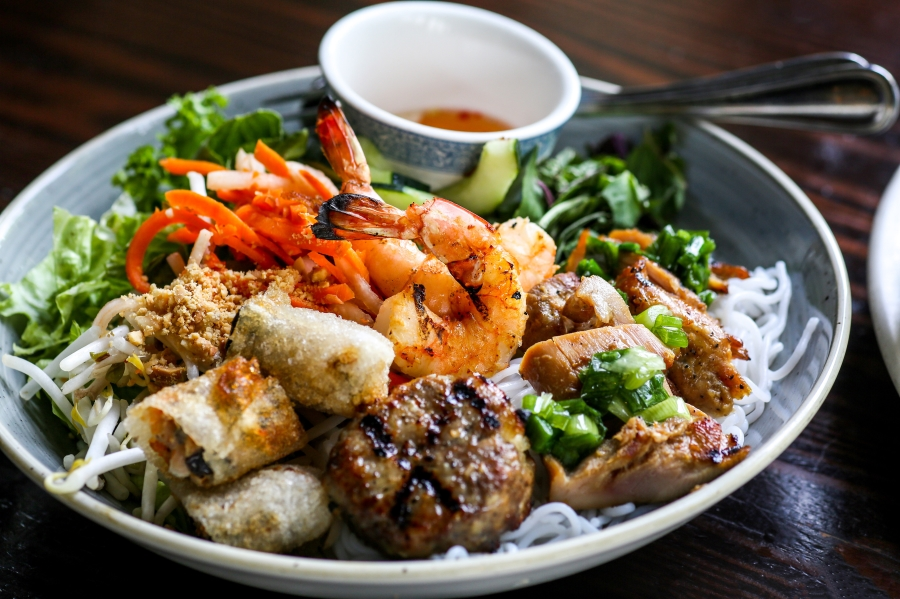

Vermicelli Noodle Bowl
- Author: Stephen Rollins
- Prep Time: 25 Minutes
- Cook Time: 15 Minutes
- Total Time: 40 minutes
- Serves: 2-3
- Category: Main Dish
- Method: Stovetop/Barbeque
- Diet: Keto/Vegan (optional)
Background on the Dish
This is a meal that is Vietnamese in origin, but has crept in to all kinds of restaurants over the years. It’s a flavor packed meal with protein, veggies and a crispy crunch to it, topped with a sweet and savory sauce that brings it all together. If you’ve never tried it you’re missing out on something delicious! As with all of our recipes, we’ll talk a little bit about technique and learning to love cooking! The most important thing as always is preparation. It’s hard to enjoy cooking when you are scrambling to get everything done, so for the recipe set aside lots of time so you can enjoy and make the meal.
Ingredients:
Sweet and Spicy Grilled Chicken
- 3 lbs. Chicken Breast (substitute tofu)
- ¼ cup Sweet Chili Sauce
- 3 tablespoons Oystersauce
- 2 tablespoons ground chili paste (sriracha)
- 3 cloves garlic
Main bowl
- 1 package Dried Vermicelli Noodle pack
- 3 long Carrots or package Shredded Carrots
- 1 Cucumber
- 1 cup Dry Roasted Peanuts
- 1 bundle Cilantro
- 2 green onions
- 2 limes (cut into wedges)
Nuoc Mam Pha San Sauce!
- ¼ cup rice vinegar
- Juice of ½ lime
- 2 tablespoons Soysauce
- ¼ cup Sweet Chilisauce
- 1 clover Garlic (minced or grated)
- 1-2 tablespoons water (to thin)
Instructions:
The Sauce!
- Mix each ingredient into the bowl. Squeeze the lime and blend well.
- Add water to thin the sauce. It should be the same consistancy as water. Try not to thin too much or it will dilute the flavor.
Note: Keep in mind that this sauce goes a long way, but if you'd like you have a local Asian Market you can find a lot of the same sauces. The name you'll find it under is Nuoc Mam Phan San!
The Dish!
- Begin by washing and trimming the access fat from chicken, then cut in half or if larger breast into three pieces.
- Mix ingredients for marinade (I usually marinade for an hour or overnight) and add chicken.
- Once an appropriate amount of time has passed heat up the grill!
- Grill at medium to medium low heat until meat is cooked all the way through.
- Start chopping vegetables in the meantime. Slice carrots into thin sticks along with cucumber. If you have a handy dandy slicer or peeler that helps too. Chop cilantro leaf roughly and crush peanuts.
- When meat is close to done, heat water in a pot until almost boiling. Remove water from heat and add the dry noodles. After they have softened (5 minutes) strain the noodles and run them under cold water until the noodles have lost all the heat (this will keep noodles from clumping). Drain the access water.
- Begin assembling your bowls with noodles at the bottom (1 - 1 1/2 cups) equal parts carrot and cucumber sticks. Last, take 2 strips of grilled meat and cut them diagonally into strips and add them to the top. Last garnish with cilantro and crushed peanuts.
- Keep Sauce (3 tbs worth) in small cups with each bowl. When ready to eat, pour Sauce over the top, mix-up well and enjoy!